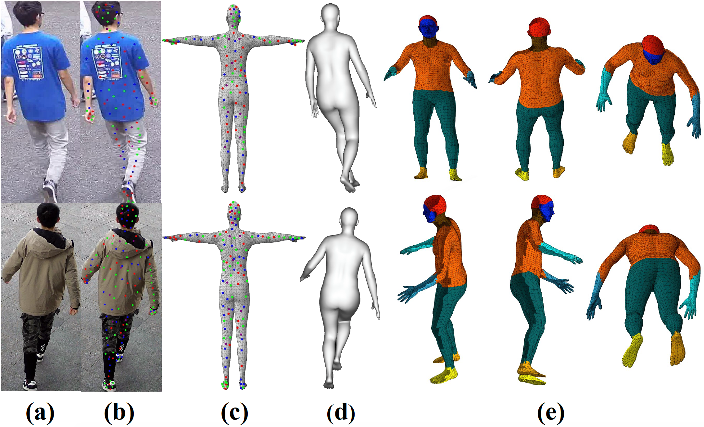

3D Dense Persons (DP3D)
Data Collection
DP3D comprises 39,100 person images belonging to 413 different persons, which were captured over the course of a year (during four distinct seasons). A total of 15 cameras were selected, with 5 of them having a resolution of 4K, 2 having a resolution of 2K, and the remainder being set to a resolution of 1080P.

Annotation Pipeline
We annotated dense 2D-3D correspondences for each person image via a carefully designed annotation system, ensuring 80 to 125 annotations for each image. The sampling method avoids seams between body parts and ensures a sufficient number of sampling points for smaller parts.

BibTeX
@InProceedings{wang2023cscl,
author = {Yubin, Wang and Huimin, Yu and Yuming, Yan and Shuyi, Song and Biyang, Liu and Yichong, Lu},
title = {Exploring Shape Embedding for Cloth-Changing Person Re-Identification via 2D-3D Correspondences},
booktitle = {Proceedings of the 31th ACM International Conference on Multimedia},
year = {2023}
}